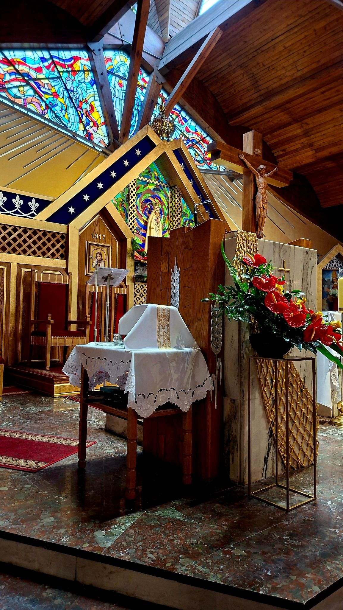
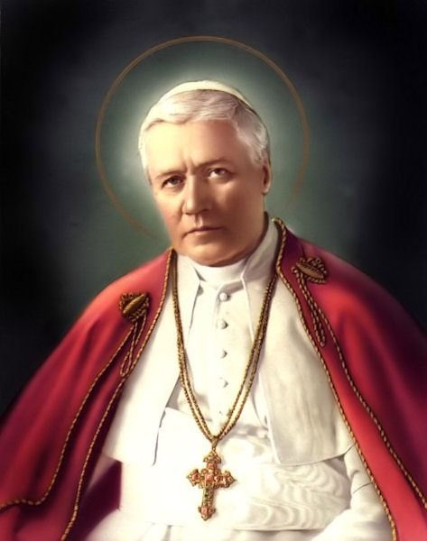
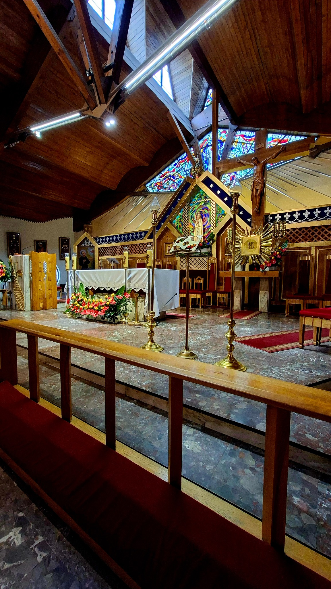
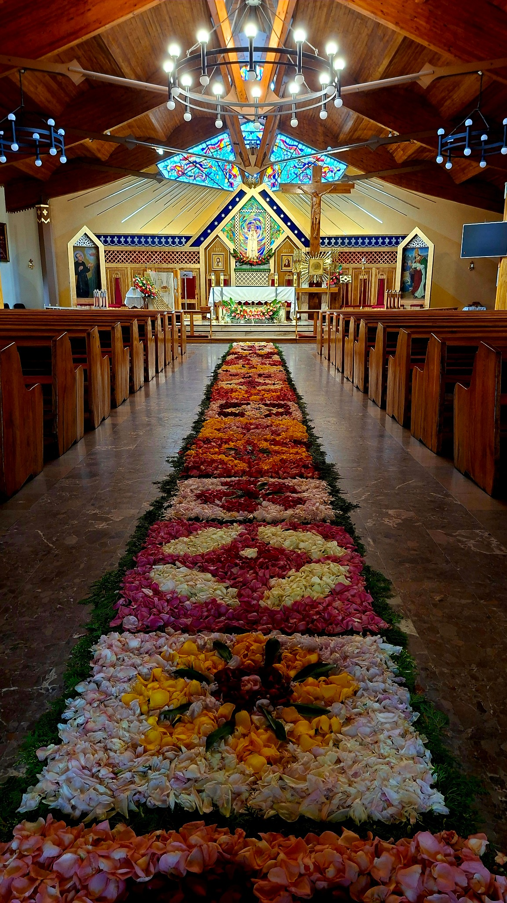
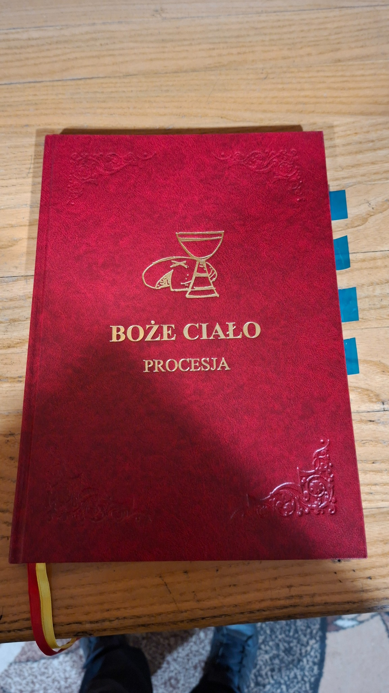
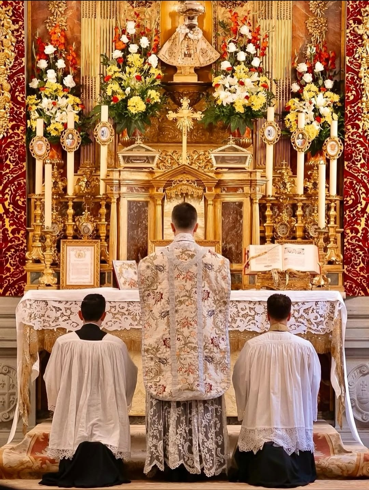
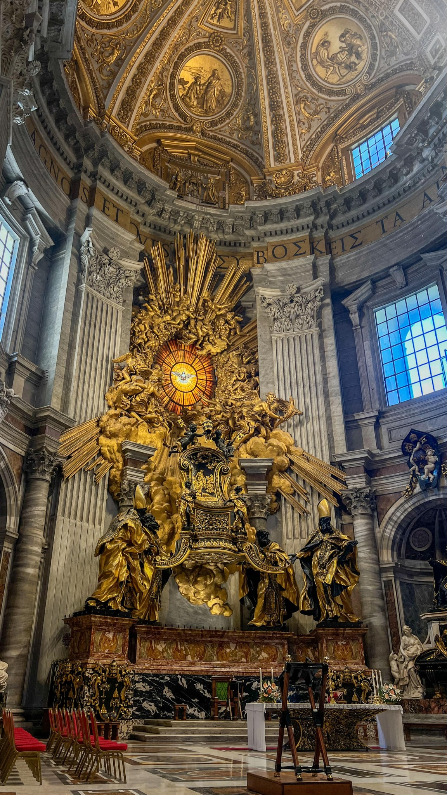
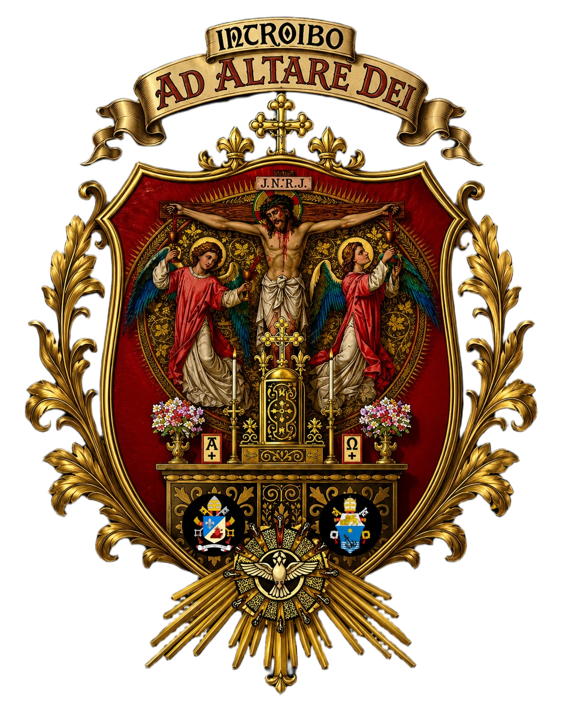

Officium Liturgicum
Altaris Sancti Pii X
Służba przy ołtarzu, formacja i umiłowanie Świętej Liturgii pod patronatem św. Piusa X.
Instaurare omnia in Christo
Poznaj nas
O naszej służbie
Officium Liturgicum Altaris Sancti Pii X to wspólnota młodych ludzi pragnących wiernie i godnie służyć przy ołtarzu.

Ad maiorem Dei gloriam
Nasza Liturgiczna Służba Ołtarza działa w Otwocku, w Śródborowie. Tworzą ją ministranci, lektorzy oraz ceremoniarze, których łączy pragnienie pięknej i godnej służby przy ołtarzu.
Szczególne miejsce w naszej wspólnocie zajmuje umiłowanie tradycji liturgicznej, piękna świętych obrzędów oraz odpowiedzialności za powierzony nam apostolat.
Chcemy, aby służba przy ołtarzu była nie tylko obowiązkiem, ale przede wszystkim drogą formacji, modlitwy i wzrastania w wierze.
Nasza służba
Przy ołtarzu każdy ma swoje miejsce, zadanie i odpowiedzialność.
Ministranci
Pomagają kapłanowi przy sprawowaniu Świętej Liturgii, ucząc się dokładności, skupienia i odpowiedzialności.
Lektorzy
Podejmują posługę słowa Bożego, służąc wspólnocie poprzez czytanie lekcji i innych tekstów liturgicznych.
Ceremoniarze
Czuwają nad przebiegiem celebracji, dbając o właściwy porządek i piękno liturgicznych obrzędów.
Nasz patron

Święty Pius X
Święty Pius X jest patronem naszej wspólnoty i wzorem gorliwości o chwałę Bożą oraz piękno Świętej Liturgii.
Jego duchowe dziedzictwo przypomina nam, że służba Boża wymaga zarówno pobożności, jak i sumienności.
Niech jego przykład prowadzi nas w codziennej służbie przy ołtarzu i pomaga nam coraz bardziej kochać Chrystusa obecnego w Najświętszym Sakramencie.
Liturgia
Przy ołtarzu służymy Chrystusowi
Święta Liturgia jest centrum naszej służby. Pragniemy troszczyć się o jej piękno, godność, porządek i należny jej szacunek.
Formacja ministrantów, lektorów i ceremoniarzy obejmuje zarówno naukę praktycznych zasad służby, jak również pogłębianie wiary i znajomości liturgii.
Galeria
Piękno świątyni, liturgii i służby przy ołtarzu.






Servire Deo
Służba przy ołtarzu jest zaszczytem, odpowiedzialnością i szkołą wiary. To tutaj uczymy się, że wszystko, co czynimy, możemy ofiarować Bogu.
Skontaktuj się z namiKontakt
Chcesz dowiedzieć się więcej o naszej służbie? Zapraszamy do kontaktu.
Officium Liturgicum
Liturgiczna Służba Ołtarza
Otwock – Śródborów
Ministranci • Lektorzy • Ceremoniarze
Sanctus Pius X
Patron naszej służby
„Instaurare omnia in Christo”
Wszystko odnowić w Chrystusie.